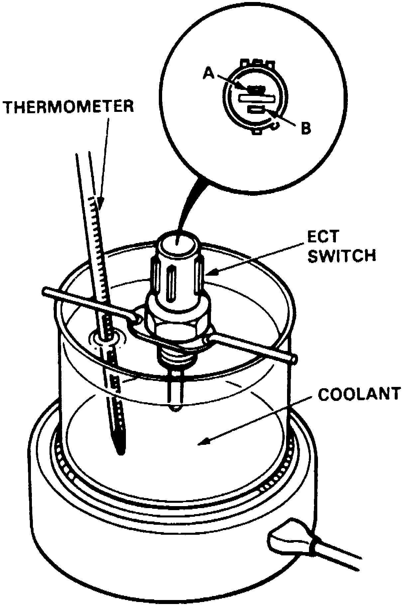
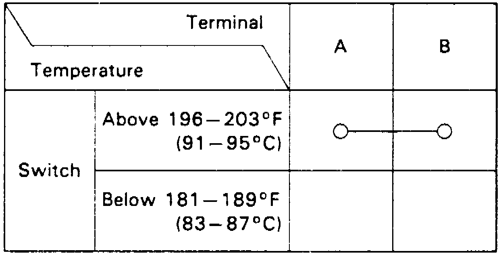

Radiator Cooling Fan Temperature Sensor / Switch: Testing and Inspection
1. Remove engine coolant temperature switch from cylinder block.Fig. 18 Engine Coolant Temperature Switch Inspection:

2. Suspend coolant temperature switch in a container of coolant, Fig. 18.
Fig. 19 Engine Coolant Temperature Switch Continuity Check:

3. Check for continuity between switch terminals A and B and compare results with Fig. 19.
4. If continuity between terminals is not as specified, replace switch.